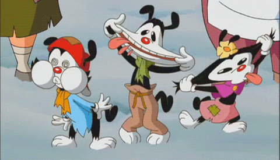
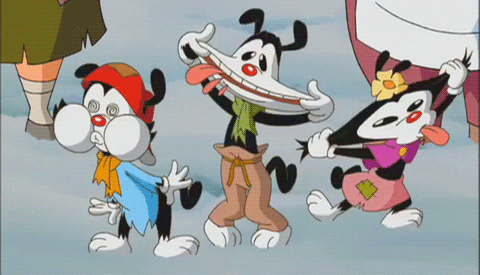

1. What tv show was aired between 1995-1998 on Kids WB?
a)Animaniacs
b)Johnny Bravo
c)CatDog
d)Shaolin Showdown
2. What tv show was the character Spinelli in?
a)Doug
b)The Crypt Keeper
c)Recess
d)Twilight Zone
3. What cartoon show has a talking mystery solving dog?
a) The Jetson
b)Scooby Doo
c)Courage the Cowardly Dog
d) Pinky and the Brain